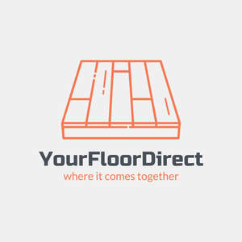

Trade Mark Journal No.2025/009 28 February 2025
UK00004159453 12 February 2025 (19,27,35)

- Class 19
- Vinyl floor coverings for forming a floor; Floor coverings of wood; Ceramic floor coverings; Rubber floor tiles; Floor screed; Floor tiles of wood; Parquet floor boards; Floor boards (Parquet -); Floor boards [of wood]; Floor boards of wood; Floor boards (Non-metallic -); Wooden floor boards; Floor tiles, not of metal; Non-metal floor panels; Laminate flooring; Laminated parquet flooring; Laminate flooring, not of metal; Wood laminates; Laminated wood; Laminated fibreboard; Laminated chipboard; Timber laminates; Laminated parquet floorboards; Laminates (Non-metallic -); Wood veneer parquet flooring; Fabric for underlayment of flooring; Hardwood flooring; Laminated boards (Non-metallic -) for walls; Timber laminated particle boards; Wood flooring; Parquet wood flooring; Parquet flooring of wood; Vinyl flooring; Wood tile flooring; Parquet flooring of cork; Cladding sheets of wood; Parquet flooring; Flooring (Parquet -); Bamboo flooring; Parquet flooring made of wood; Flooring tiles (Non-metallic -); Particleboard; Parquet flooring and parquet slabs; Flooring underlay; Flooring (Non-metallic -); Laminates of non-metallic materials for use in building; Parquet flooring made of cork; Plywood sheets; Wooden flooring; Laminated boards (Non-metallic -) for building use; Wood fibreboard; Fiberboards; Flooring made of wood; Flooring underlays; Artificial wood flooring; Rubber flooring; Glue-laminated wood; Veneer wood; Wood veneer; Flooring underlay made of cork; Wood core plywood; Wood paneling; Veneer for floors; Synthetic flooring materials or wall-claddings; Wood veneers.
- Class 27
- Floor coverings [for existing floors]; Vinyl floor coverings for existing floors; Floor coverings; Coverings (Floor -); Floor mats; Textile floor mats for use in the home; Rugs (Floor -); Vinyl floor coverings; Floor mats of cork; Linoleum tiles [floor coverings]; Floor coverings and artificial ground coverings; Anti-slip floor coverings for use on staircases; Protective floor coverings; Floor tiles made of carpet; Linoleum for covering existing floors; Coverings for existing floors; Chair mats [under-chair floor protector]; Anti-slip material for use under floor coverings; Carpet tiles for covering floors.
- Class 35
- Retail services in relation to floor coverings; Business management of wholesale and retail outlets; Wholesale services in relation to floor coverings; Shop retail services connected with carpets; Retail services connected with the sale of furniture; Retail store services in the field of clothing; Business management of retail outlets; Retail services in relation to wall coverings; Retail shop window display arrangement services; Retail services in relation to furniture; Retail services relating to furniture; Retail services in relation to furnishings; Retail services in relation to kitchen appliances; Administration of the business affairs of retail stores; Retail services in relation to building materials; Reproduction of files [paper].
YourFloorDirect LTD